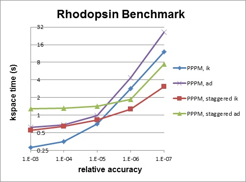

\(\renewcommand{\AA}{\text{Å}}\)
7.3. General tips
Note
this page is still a work in progress
Here is a list of general ideas for improving simulation performance. Most of them are only applicable to certain models and certain bottlenecks in the current performance, so let the timing data you generate be your guide. It is hard, if not impossible, to predict how much difference these options will make, since it is a function of problem size, number of processors used, and your machine. There is no substitute for identifying performance bottlenecks, and trying out various options.
rRESPA
Two-FFT PPPM
Staggered PPPM
single vs double PPPM
partial charge PPPM
verlet/split run style
processor command for proc layout and numa layout
load-balancing: balance and fix balance
Two-FFT PPPM, also called analytic differentiation or ad PPPM, uses 2 FFTs instead of the 4 FFTs used by the default ik differentiation PPPM. However, 2-FFT PPPM also requires a slightly larger mesh size to achieve the same accuracy as 4-FFT PPPM. For problems where the FFT cost is the performance bottleneck (typically large problems running on many processors), 2-FFT PPPM may be faster than 4-FFT PPPM.
Staggered PPPM performs calculations using two different meshes, one shifted slightly with respect to the other. This can reduce force aliasing errors and increase the accuracy of the method, but also doubles the amount of work required. For high relative accuracy, using staggered PPPM allows one to half the mesh size in each dimension as compared to regular PPPM, which can give around a 4x speedup in the kspace time. However, for low relative accuracy, using staggered PPPM gives little benefit and can be up to 2x slower in the kspace time. For example, the rhodopsin benchmark was run on a single processor, and results for kspace time vs. relative accuracy for the different methods are shown in the figure below. For this system, staggered PPPM (using ik differentiation) becomes useful when using a relative accuracy of slightly greater than 1e-5 and above.

Note
Using staggered PPPM may not give the same increase in accuracy of energy and pressure as it does in forces, so some caution must be used if energy and/or pressure are quantities of interest, such as when using a barostat.